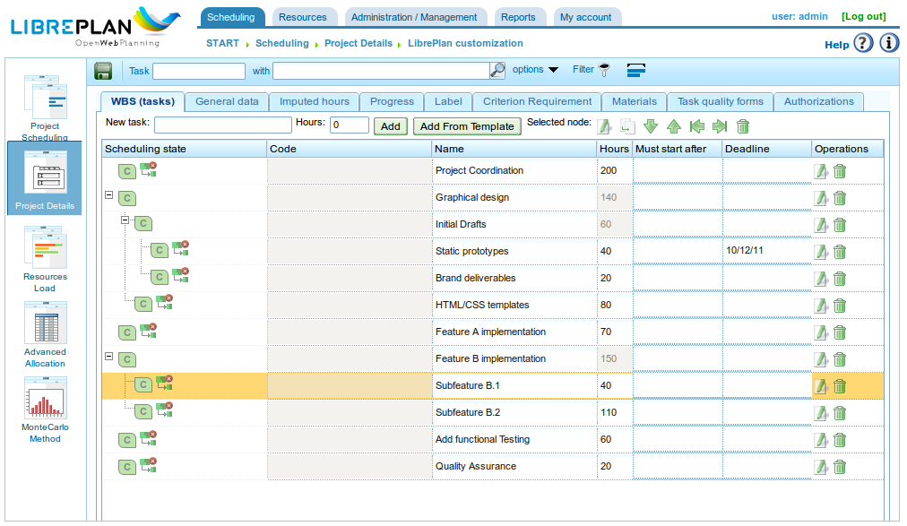

Introdução
Contents
Este documento descreve as funcionalidades do LibrePlan e fornece informações ao utilizador sobre como configurar e utilizar a aplicação.
O LibrePlan é uma aplicação web de código aberto para planeamento de projectos. O seu principal objectivo é fornecer uma solução abrangente para a gestão de projectos empresariais. Para qualquer informação específica de que necessite sobre este software, por favor contacte a equipa de desenvolvimento em http://www.libreplan.com/contact/

Visão Geral da Empresa
Visão Geral da Empresa e Gestão de Vistas
Tal como mostrado no ecrã principal do programa (ver a imagem anterior) e na visão geral da empresa, os utilizadores podem ver uma lista de projectos planeados. Isto permite-lhes compreender o estado global da empresa no que respeita a projetos e utilização de recursos. A visão geral da empresa oferece três vistas distintas:
Vista de Planeamento: Esta vista combina duas perspectivas:
- Acompanhamento de Projetos e Tempo: Cada projecto é representado por um diagrama de Gantt, indicando as datas de início e fim do projecto. Esta informação é apresentada juntamente com o prazo acordado. É então efectuada uma comparação entre a percentagem de progresso alcançado e o tempo efectivamente dedicado a cada projecto. Isto fornece uma imagem clara do desempenho da empresa em qualquer momento. Esta vista é a página de entrada predefinida do programa.
- Gráfico de Utilização de Recursos da Empresa: Este gráfico apresenta informações sobre a alocação de recursos entre projectos, fornecendo um resumo da utilização de recursos de toda a empresa. O verde indica que a alocação de recursos está abaixo de 100% da capacidade. A linha preta representa a capacidade total de recursos disponível. O amarelo indica que a alocação de recursos excede 100%. É possível ter sub-alocação global e, simultaneamente, sobre-alocação para recursos específicos.
Vista de Carga de Recursos: Este ecrã apresenta uma lista dos trabalhadores da empresa e as respectivas alocações de tarefas específicas, ou alocações genéricas baseadas em critérios definidos. Para aceder a esta vista, clique em Carga global de recursos. Veja a imagem seguinte para um exemplo.
Vista de Administração de Projetos: Este ecrã apresenta uma lista de projetos da empresa, permitindo aos utilizadores efectuar as seguintes acções: filtrar, editar, eliminar, visualizar planeamento ou criar uma nova projeto. Para aceder a esta vista, clique em Lista de projetos.

Visão Geral de Recursos

Estrutura de Decomposição do Trabalho
A gestão de vistas descrita acima para a visão geral da empresa é muito semelhante à gestão disponível para um projecto individual. Um projecto pode ser acedido de várias formas:
- Clique com o botão direito no diagrama de Gantt da projeto e seleccione Planear.
- Aceda à lista de projetos e clique no ícone do diagrama de Gantt.
- Crie uma nova projeto e altere a vista de projeto actual.
O programa oferece as seguintes vistas para uma projeto:
- Vista de Planeamento: Esta vista permite aos utilizadores visualizar o planeamento de tarefas, dependências, marcos e mais. Consulte a secção Planeamento para mais detalhes.
- Vista de Carga de Recursos: Esta vista permite aos utilizadores verificar a carga de recursos designada para um projecto. O código de cores é consistente com a visão geral da empresa: verde para uma carga inferior a 100%, amarelo para uma carga igual a 100% e vermelho para uma carga superior a 100%. A carga pode ter origem numa tarefa específica ou num conjunto de critérios (alocação genérica).
- Vista de Edição de Projeto: Esta vista permite aos utilizadores modificar os detalhes da projeto. Consulte a secção Projetos para mais informações.
- Vista de Alocação Avançada de Recursos: Esta vista permite aos utilizadores alocar recursos com opções avançadas, como especificar horas por dia ou as funções alocadas a serem desempenhadas. Consulte a secção Alocação de recursos para mais informações.
O que Torna o LibrePlan Útil?
O LibrePlan é uma ferramenta de planeamento de uso geral desenvolvida para responder aos desafios do planeamento de projectos industriais que não eram adequadamente cobertos pelas ferramentas existentes. O desenvolvimento do LibrePlan foi também motivado pelo desejo de fornecer uma alternativa gratuita, de código aberto e totalmente baseada na web às ferramentas de planeamento proprietárias.
Os conceitos fundamentais que suportam o programa são os seguintes:
- Visão Geral da Empresa e Multi-Projecto: O LibrePlan foi especificamente concebido para fornecer aos utilizadores informações sobre múltiplos projectos em curso numa empresa. Por isso, é inerentemente um programa multi-projecto. O foco do programa não se limita a projectos individuais, embora vistas específicas para projectos individuais também estejam disponíveis.
- Gestão de Vistas: A visão geral da empresa, ou vista multi-projecto, é acompanhada de várias vistas da informação armazenada. Por exemplo, a visão geral da empresa permite aos utilizadores ver projetos e comparar o seu estado, ver a carga global de recursos da empresa e gerir projetos. Os utilizadores também podem aceder à vista de planeamento, vista de carga de recursos, vista de alocação avançada de recursos e vista de edição de projeto para projectos individuais.
- Critérios: Os critérios são uma entidade do sistema que permite a classificação tanto de recursos (humanos e máquinas) como de tarefas. Os recursos devem satisfazer certos critérios, e as tarefas requerem que critérios específicos sejam cumpridos. Esta é uma das funcionalidades mais importantes do programa, pois os critérios formam a base da alocação genérica e respondem a um desafio significativo na indústria: a natureza morosa da gestão de recursos humanos e a dificuldade das estimativas de carga da empresa a longo prazo.
- Recursos: Existem dois tipos de recursos: humanos e máquinas. Os recursos humanos são os trabalhadores da empresa, utilizados para planear, monitorizar e controlar a carga de trabalho da empresa. Os recursos máquina, dependentes das pessoas que os operam, funcionam de forma semelhante aos recursos humanos.
- Alocação de Recursos: Uma funcionalidade chave do programa é a capacidade de designar recursos de duas formas: específica e genericamente. A alocação genérica baseia-se nos critérios necessários para concluir uma tarefa e deve ser cumprida por recursos capazes de satisfazer esses critérios. Para compreender a alocação genérica, considere este exemplo: João Silva é um soldador. Normalmente, João Silva seria especificamente atribuído a uma tarefa planeada. No entanto, o LibrePlan oferece a opção de seleccionar qualquer soldador da empresa, sem necessidade de especificar que João Silva é a pessoa designada.
- Controlo de Carga da Empresa: O programa permite um controlo fácil da carga de recursos da empresa. Este controlo estende-se tanto ao médio prazo como ao longo prazo, uma vez que os projectos actuais e futuros podem ser geridos no programa. O LibrePlan fornece gráficos que representam visualmente a utilização de recursos.
- Etiquetas: As etiquetas são utilizadas para categorizar as tarefas do projecto. Com estas etiquetas, os utilizadores podem agrupar tarefas por conceito, permitindo uma revisão posterior em grupo ou após filtragem.
- Filtros: Como o sistema inclui naturalmente elementos que rotulam ou caracterizam tarefas e recursos, podem ser utilizados filtros de critérios ou etiquetas. Isto é muito útil para rever informação categorizada ou gerar relatórios específicos baseados em critérios ou etiquetas.
- Calendários: Os calendários definem as horas produtivas disponíveis para os diferentes recursos. Os utilizadores podem criar calendários gerais da empresa ou definir calendários mais específicos, permitindo a criação de calendários para recursos individuais e tarefas.
- Projetos e Elementos de Projeto: O trabalho solicitado pelos clientes é tratado como uma projeto na aplicação, estruturada em elementos de projeto. A projeto e os seus elementos seguem uma estrutura hierárquica com x níveis. Esta árvore de elementos constitui a base para o planeamento do trabalho.
- Progresso: O programa pode gerir vários tipos de progresso. O progresso de um projecto pode ser medido em percentagem, em unidades, em relação ao orçamento acordado e mais. A responsabilidade de determinar que tipo de progresso usar para comparação nos níveis superiores do projecto cabe ao gestor de planeamento.
- Tarefas: As tarefas são os elementos fundamentais de planeamento do programa. São utilizadas para calendarizar o trabalho a realizar. As características principais das tarefas incluem: dependências entre tarefas e o potencial requisito de que critérios específicos sejam cumpridos antes de os recursos poderem ser alocados.
- Relatórios de Trabalho: Estes relatórios, submetidos pelos trabalhadores da empresa, detalham as horas trabalhadas e as tarefas associadas a essas horas. Esta informação permite ao sistema calcular o tempo real necessário para concluir uma tarefa em comparação com o tempo orçamentado. O progresso pode então ser comparado com as horas reais utilizadas.
Para além das funções principais, o LibrePlan oferece outras funcionalidades que o distinguem de programas semelhantes:
- Integração com ERP: O programa pode importar directamente informações de sistemas ERP da empresa, incluindo projetos, recursos humanos, relatórios de trabalho e critérios específicos.
- Gestão de Versões: O programa pode gerir múltiplas versões de planeamento, permitindo ainda aos utilizadores rever as informações de cada versão.
- Gestão de Histórico: O programa não elimina informação; apenas a marca como inválida. Isto permite aos utilizadores rever informação histórica utilizando filtros de data.
Convenções de Usabilidade
Informação Sobre Formulários
Antes de descrever as várias funções associadas aos módulos mais importantes, é necessário explicar a navegação geral e o comportamento dos formulários.
Existem essencialmente três tipos de formulários de edição:
- Formulários com botão *Voltar*: Estes formulários fazem parte de um contexto maior, e as alterações efectuadas são armazenadas em memória. As alterações só são aplicadas quando o utilizador guarda explicitamente todos os detalhes no ecrã a partir do qual o formulário se originou.
- Formulários com botões *Guardar* e *Fechar*: Estes formulários permitem duas acções. A primeira guarda as alterações e fecha a janela actual. A segunda fecha a janela sem guardar quaisquer alterações.
- Formulários com botões *Guardar e continuar*, *Guardar* e *Fechar*: Estes formulários permitem três acções. A primeira guarda as alterações e mantém o formulário actual aberto. A segunda guarda as alterações e fecha o formulário. A terceira fecha a janela sem guardar quaisquer alterações.
Ícones e Botões Padrão
- Edição: Em geral, os registos do programa podem ser editados clicando num ícone que parece um lápis num caderno branco.
- Recuo à Esquerda: Estas operações são geralmente utilizadas para elementos dentro de uma estrutura em árvore que precisam de ser movidos para um nível mais profundo. Isto é feito clicando no ícone que parece uma seta verde a apontar para a direita.
- Recuo à Direita: Estas operações são geralmente utilizadas para elementos dentro de uma estrutura em árvore que precisam de ser movidos para um nível superior. Isto é feito clicando no ícone que parece uma seta verde a apontar para a esquerda.
- Eliminar: Os utilizadores podem eliminar informação clicando no ícone do caixote do lixo.
- Pesquisar: O ícone da lupa indica que o campo de texto à sua esquerda é utilizado para pesquisar elementos.
Separadores
O programa utiliza separadores para organizar formulários de edição e administração de conteúdos. Este método é utilizado para dividir um formulário abrangente em diferentes secções, acessíveis clicando nos nomes dos separadores. Os outros separadores mantêm o seu estado actual. Em todos os casos, as opções de guardar e cancelar aplicam-se a todos os sub-formulários dentro dos diferentes separadores.
Acções Explícitas e Ajuda de Contexto
O programa inclui componentes que fornecem descrições adicionais de elementos quando o rato paira sobre eles durante um segundo. As acções que o utilizador pode efectuar são indicadas nas etiquetas dos botões, nos textos de ajuda associados, nas opções do menu de navegação e nos menus de contexto que aparecem ao clicar com o botão direito na área do planeador. Além disso, são fornecidos atalhos para as operações principais, como duplo clique em elementos listados ou utilização de eventos de tecla com o cursor e a tecla Enter para adicionar elementos ao navegar pelos formulários.